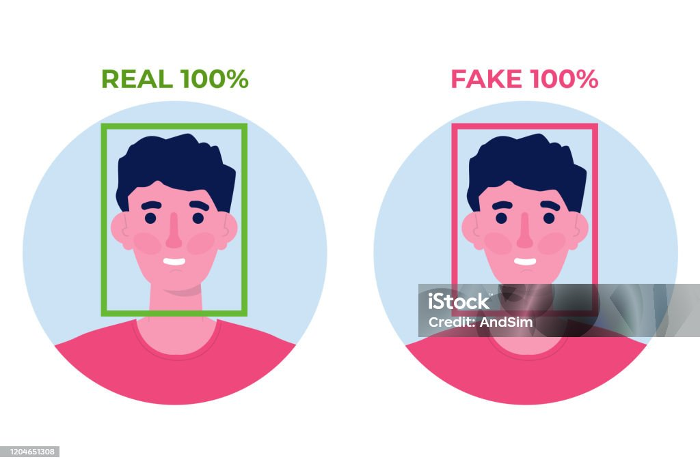

最近のニュース
ドローン
ドローンは、無人航空機の一種で、人間が直接操縦せずに
遠隔地から制御することができる航空機です。一般的には
、プロペラやローターを動力源として使用し、飛行中には
カメラやセンサーなどを搭載して様々な情報を収集するこ
とができます。
ChatGPT

OpenAIが開発した自然言語処理モデルの一つであり、GPT（
Generative Pre-trained Transformer）シリーズの一部で
す。GPTはTransformerアーキテクチャを基にした深層学習モ
デルで、大量のテキストデータを学習して構築されています。
ChatGPTはその中でも、対話型のタスクに特化して調整された
バージョンです。
円安
日本円が他の通貨に比べて価値が低下する状態を指します。これ
は外国為替市場での為替レートが、特に日本円に対して他の通貨
と比べて低くなることを示します。円安になることで輸入品が高くなり、
輸入関係では利益を得にくくなります。
全自動運転
車両が人間の介入なしに完全に自律して運転することを指します。
この技術では、車両はセンサーやカメラ、レーダー、リダーなどの
情報収集装置を使用して周囲の環境をリアルタイムで認識し、その
情報を基に判断や意思決定を行います。全自動運転車は、通常の運
転状況や特定の交通状況において、運転者が運転操作をする必要が
ないように設計されています。
ディープフェイク

「ディープラーニング」と「フェイク」を組み合わせた造語で、AI
（人工知能）を用いて、人物の動画や音声を人工的に合成する処理技
術を指します。もともとは映画製作など、エンターテインメントの現
場での作業効率化を目的に開発されたものです。